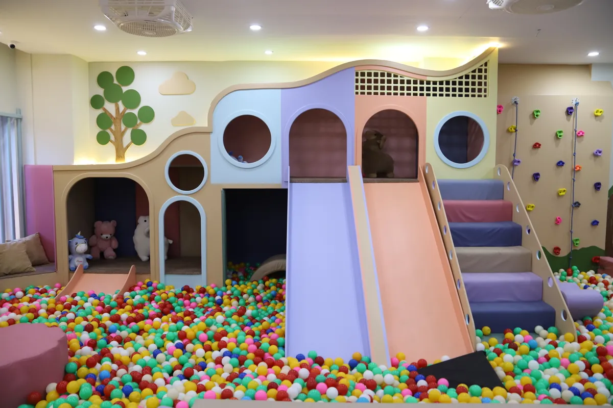

10 Best Indoor Activities for Kids in Islamabad (2026 Guide)
Islamabad has a growing number of indoor options for families, but finding something genuinely good for younger children — not just a mall food court with a small play corner — takes research. This guide covers the best options across the city, with honest details on what each one offers.
Why Indoor Activities Matter for Islamabad Kids
Pakistan's weather swings from heavy monsoon rains to extreme summer heat. For families in Islamabad and Rawalpindi, that means a large part of the year when outdoor play is limited. Indoor activity spaces fill that gap, giving children consistent access to physical play, social interaction and developmental activities no matter the season.
1. Little Explorers World — Bahria Town Phase 4
The most complete indoor play centre in Islamabad. Located on the 2nd floor of Alpha Marina, Marina Commercial, Bahria Town Phase 4, Little Explorers World has 8 play zones covering every kind of play — active, creative, sensory and quiet.
- Slides and ball pit for high-energy play
- Climbing wall with colour-coded holds
- Kinetic sand and sensory room for calmer moments
- Lego table, pretend play kitchen and latcher board for imaginative play
- LE Cafe for parents with Wi-Fi, coffee and live CCTV
- Open daily 12 PM to 10 PM
- Rs. 1,199/hr under 2 years, Rs. 1,999/hr over 2 years
Best for: Toddlers to age 10. Great for birthday parties too (packages from Rs. 15,000).
Visit Little Explorers World — Bahria Town Phase 4, Islamabad. Open daily 12 PM – 10 PM.
Book Your Visit2. Funville — Centaurus Mall
A larger entertainment centre with rides, arcade games and a small soft play area. Better for older kids (5+). Can get crowded on weekends.
3. Land of Legends — Gulberg Greens
Outdoor theme park with some indoor sections. Seasonal — best avoided in peak summer heat.
4. ARY Mundo — Bahria Town
Newer family entertainment centre with bowling, arcade and kids' rides. More suitable for ages 6 and above.
5. Giga Mall Play Zone — DHA 2
Basic soft play area inside Giga Mall. Smaller than dedicated play centres but convenient if you are already at the mall.
6. Centaurus Indoor Play Area
Small play section near the food court. Fine for a quick 30-minute visit but not designed for a full outing.
7. Board Game Cafes — F-7 / F-6
Several cafes now offer board games. Good for families with children aged 7 and above who enjoy quieter activity.
8. Pottery and Art Studios
Creative studios where kids can paint, mould clay and do craft projects. Check Facebook for current locations and schedules in Islamabad.
9. Indoor Trampoline Parks
A few trampoline parks have opened in the city. Strictly for children 5 and above. Check weight and age limits before visiting.
10. Cooking Classes for Kids
Monthly cooking workshops for children run by some cafes and home bakers. Search "cooking class for kids Islamabad" on Instagram for current schedules.
Quick Comparison Table
| Venue | Best Age | Price Range | Location |
|---|---|---|---|
| Little Explorers World | 0–10 yrs | Rs. 1,199–1,999/hr | Bahria Town Ph 4 |
| Funville | 5+ yrs | Rs. 500–1,500 | Centaurus |
| ARY Mundo | 6+ yrs | Varies | Bahria Town |
| Giga Mall Play Zone | 2–8 yrs | Rs. 400–800 | DHA 2 |
Our Recommendation
For children under 10, especially toddlers and preschoolers, Little Explorers World is the most complete option in Islamabad. It is the only venue that combines 8 dedicated play zones, daily cleaning standards, a proper parent lounge and birthday party facilities under one roof.
Frequently Asked Questions
Little Explorers World in Bahria Town Phase 4 is the best option for toddlers. It has a sensory room, kinetic sand, soft climbing and a ball pit all designed for young children with proper safety padding and trained staff.
Most quality indoor play centres charge an entry or hourly fee. Public libraries and community parks occasionally run free activity sessions — check their Facebook pages for schedules.
Little Explorers World is consistently rated as the top indoor play area in Islamabad, particularly for children aged 0 to 10. It has 8 dedicated zones, trained staff and daily sanitisation.